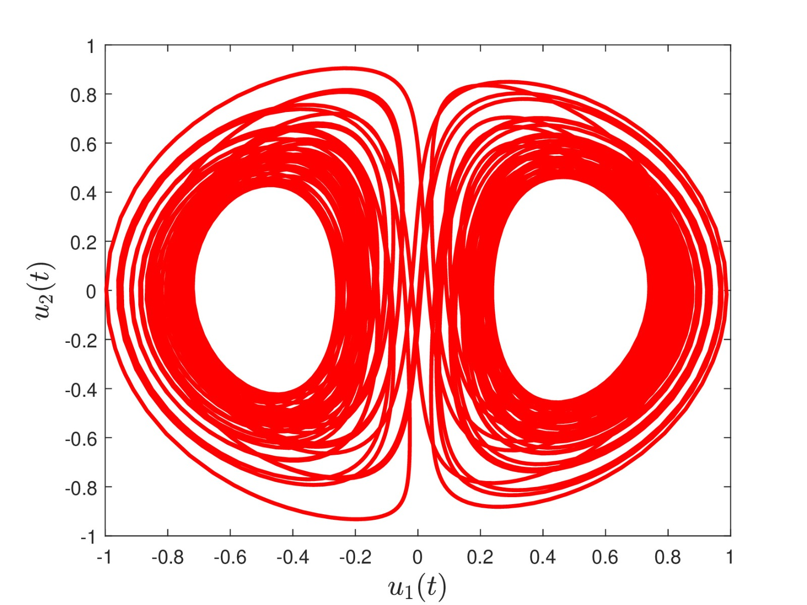
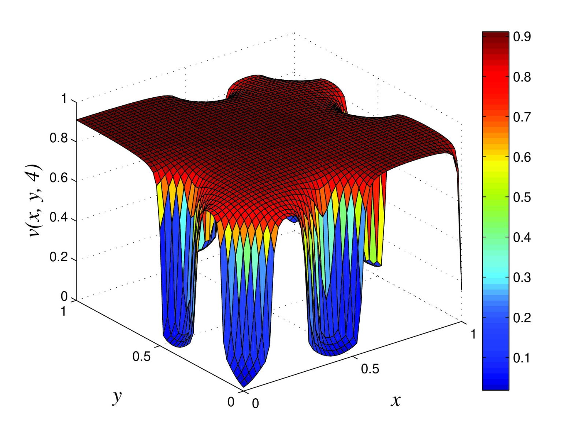
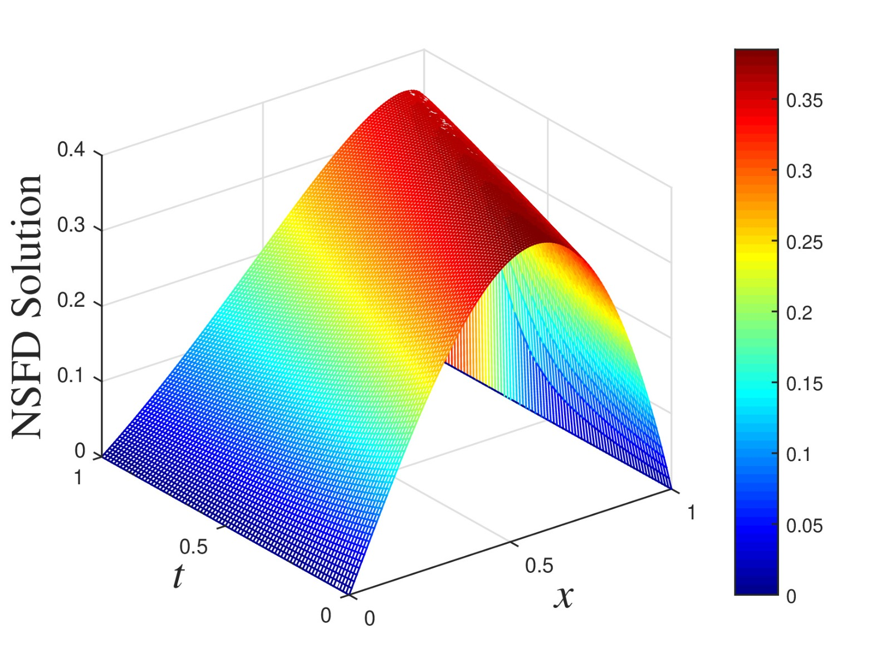
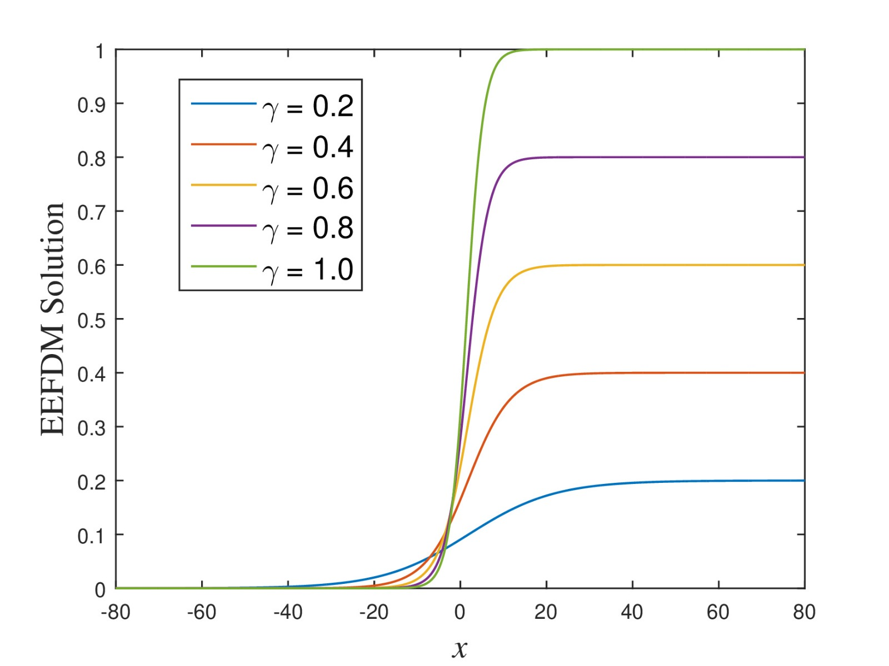
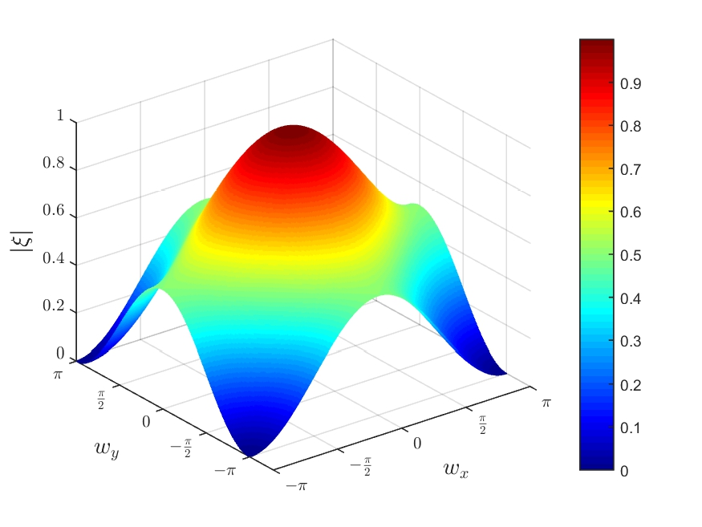
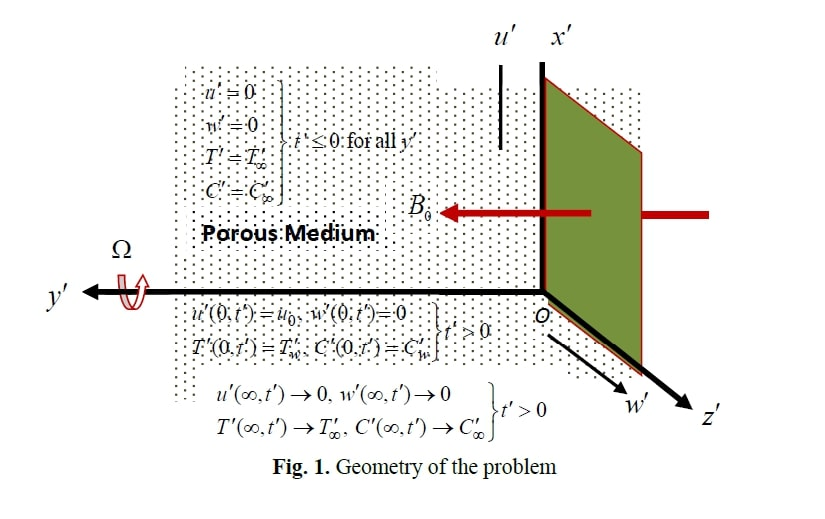

About
Hello · E kú àbọ̀ · Sannu da zuwa · Sawubona · Hola
I am a lecturer in the School of Computer Science and Applied Mathematics at the University of the Witwatersrand, Johannesburg. My work sits at the meeting point of numerical analysis and the physical sciences: I design and analyse numerical methods, and I use them to study fluid flow, transport phenomena and other dynamical systems.
Before joining Wits I was a postdoctoral research fellow at Rhodes University, where I worked on multidomain pseudospectral methods for fractional differential equations. I hold a PhD in Mathematics from Nelson Mandela University, and an MSc and BSc (Hons) from Obafemi Awolowo University, Ile-Ife, Nigeria.
“Young man, in mathematics you don’t understand things. You just get used to them.” — John von Neumann
Research interests
Recent news
-
2026Appointed Lecturer at the University of the Witwatersrand
Joined the School of Computer Science and Applied Mathematics, teaching and supervising in computational mathematics.
-
September 2026The ICAWMSCS Seminar Series
Infectious Deception: An epidemiological blueprint for curbing cybercrime. Link.
-
2026Paper in AppliedMath (MDPI)
“Modeling placement-based student pathways in higher education: A compartmental framework of flow from placement to assessment”. Read the article.
-
May 2025Departmental seminar, Rhodes University
Numerical methods: the unsung heroes of scientific computing. See all talks.
-
Apr 2025SANUM 2025, University of the Witwatersrand
Presented work on unsteady reactive hydromagnetic Eyring–Powell flow in a non-horizontal channel at the 46th South African Numerical and Applied Mathematics symposium.
Academic background
-
2026–Lecturer · University of the Witwatersrand
Teaching and research in computational mathematics, and supervision of students working on numerical methods and mathematical modelling.
-
2024–25Postdoctoral Research Fellow · Rhodes University
Constructed multidomain pseudospectral methods for fractional differential equations, alongside multidisciplinary projects bridging mathematical modelling and machine learning.


-
2023PhD in Mathematics · Nelson Mandela University
Developed structure-preserving numerical schemes for advection–diffusion–reaction equations, including a non-standard finite difference scheme preserving a biofilm model and an accurate scheme for the Burgers–Huxley equation.



-
2018MSc in Mathematics · Obafemi Awolowo University
Modelled fluid flow in a rotating medium, using the Laplace transform for analytical solutions to benchmark finite difference results where closed forms were unavailable.

-
2013BSc (Hons) in Mathematics · Obafemi Awolowo University
Honours thesis: A simple mathematical model for urban growth (based on economic and geographical factors). Followed by national youth service in Rivers State, Nigeria (2014–2015).